文字
背景
行間


カテゴリ:その他
 ライフイズテックレッスンコンテスト2023受賞
ライフイズテックレッスンコンテスト2023受賞
ライフイズテックレッスンコンテスト2023で生徒が敢闘賞を受賞しました。
ライフイズテックレッスンコンテストとは、授業を通じて学んだ問題解決の考え方と、それを解決するためのプログラミングスキルを駆使して、オリジナルWebサイトを制作するコンテストです。
「身の回りの問題解決部門」と「SDGs問題解決部門」があり、「自分の好きなものを、もっと多くの人に好きになって欲しい」「学校で調べたSDGsの問題を、日常のちょっとしたことから変えていきたい」など、自身のテーマに沿って制作していきます。
佐倉高校ではSS情報Ⅰの授業でWebサイトを制作し、意欲のある生徒がこのコンテストに参加しています。
2023冬の部で
理数科１年 岡本凌正くん が敢闘賞を受賞
しました。

コンテストの概要や結果は以下のリンクからご覧ください。
 SSH通信No.19
SSH通信No.19
SSH通信No.19を発行しました。
内容は佐倉アクティブ「データサイエンス入門」についてです。
下の画像をクリックすると見ることができます。
ぜひご覧ください。
過去のSSH通信一覧は以下のリンクからご覧ください。
https://cms2.chiba-c.ed.jp/sakura-h/17872fd488f90b7aed8eec4572b51f71/SSH%E9%80%9A%E4%BF%A1
 第23回日本情報オリンピック指定校認定
第23回日本情報オリンピック指定校認定
 大学模擬授業
大学模擬授業
対象は2学年全員で、たくさんの大学の先生方をお招きし、16分野の中から興味のある分野を2つ選んで講義を聴きに行きました。
理学の分野では千葉大学大学院理学研究院准教授の佐々木浩宣先生による「階乗について」の講義が行われました(写真)。
階乗とは高校1年生で学習する「！」の記号が使われているものです。
急激な増加をすることでよく知られている指数関数よりも、さらに増加が速い階乗について、「解析学」という分野の考え方から考察しました。
どの講義も高校では学習しないハイレベルな内容も多く含んでいましたが、高校生でも理解できるように分かりやすく説明していただき、大学の授業に触れることができる良い機会となりました。
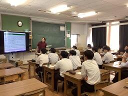 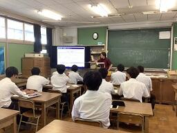
 ようこそ先輩～僕の大学、私の大学～
ようこそ先輩～僕の大学、私の大学～
対象は1学年生徒全員で、講師として8名の佐倉高校OBOGの大学生に来ていただき実施されました。
学年を8グループに分けて8教室に散らばり、先輩の大学の紹介や学問の紹介、高校時代の過ごし方などを講義していただき、質疑応答も含めて4サイクル行いました。
1H(理数科)教室に来ていただいたのは理数科OGの
東京海洋大学海洋資源環境学部海洋資源エネルギー学科 横山千恵さん
でした。
東京海洋大学の船に乗っていく実習やキャンパスの様子など、写真をたくさん見せていただきました。
フィールドに出ていく研究と研究室でデータを分析していく研究のそれぞれの面白さ、大変さについても語っていただきました。
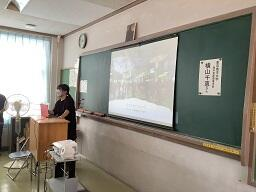

 学校説明会SSH体験授業
学校説明会SSH体験授業
明日からの学校説明会でSSH体験授業のコーナーを設置します。
場所は理科館1階の化学実験室です。
昨年度は2日間でこの体験授業に中学生・保護者合わせて約380名も来てくれました。
SSH講座や科学的な探究活動に興味がある方はぜひお越しください。
昨年度のSSH体験授業の様子は、以下のリンクからご覧ください。
https://cms2.chiba-c.ed.jp/sakura-h/blogs/blog_entries/view/47/0319d4365758ca637ed9a3a7cddf5078?frame_id=212
 シンガポールオンライン交流会
シンガポールオンライン交流会
交流会は7月31日(月)の午後に行われ、理数科の2年生が様々な会場に分かれ、各自の端末でzoomを利用して参加しました。
相手校はシンガポールのSt. Joseph's Institutionで、今年度のサイエンスツアーで訪れる高校です。
訪問する前にオンラインで複数回交流を深め、訪問した際に対面でもスムーズに交流を行う目的です。
今回はまずお互いに自己紹介を行い、
その後相手校の生徒の研究発表を聞いてディスカッションしました。
本校の研究発表は次回8月21日(月)のオンライン交流会で行う予定です。


 令和4年度研究開発実施報告書
令和4年度研究開発実施報告書
本校SSH事業の令和4年度研究開発実施報告書を発行しました。
以下の画像をクリックすると報告書を見ることができます。
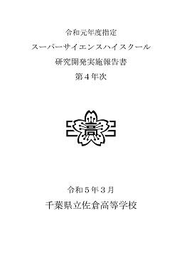
今年度の報告書作成にあたり、情報提供をしていただいた方々、SSH講座を開講していただいた先生方、
その他ご協力をいただいたたくさんの方々に感謝いたします。
ありがとうございました。
来年度はSSH第Ⅱ期5年目となりますので、引き続きご協力をよろしくお願いいたします。
これまでの研究開発実施報告書は以下のリンクからご覧ください。
令和4年度研究開発実施報告書.pdf
SSH通信No.11
SSH通信No.11を発行しました。
内容は佐倉アクティブ「ゾムツール(立体図形)講座」についてです。
下の画像をクリックすると見ることができます。
ぜひご覧ください。
過去のSSH通信一覧は以下のリンクからご覧ください。
SSH通信No.11
SSH通信No.10
SSH通信No.10を発行しました。
内容は佐倉アクティブ「チバニアンってなんだ？」についてです。
下の画像をクリックすると見ることができます。
ぜひご覧ください。
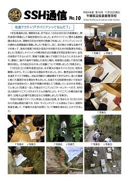
過去のSSH通信一覧は以下のリンクからご覧ください。
 第25回数理科学コンクール
第25回数理科学コンクール
数理科学コンクールとは、千葉大学先進科学センター主催で
水の惑星にどんな波が起こるか？丈夫な家に柱は何本必要か？など、
以前は千葉大学を会場として開催されていて、グループ対抗で
実験器具や書籍がたくさん用意されている規模の大きいコンクールでしたが、
コロナ禍の影響で、自宅に実験キットが送られてきて
2日間かけて各自実験し、分析・考察する形式になっています。
結果は例年3月に発表されていますので、受賞者が出たらまたお知らせをします。
https://www.cfs.chiba-u.ac.jp/events/math/index.html
科学の甲子園
会場は千葉県総合教育センターで、本校の出場は10年連続10回目です。前日まで、修学旅行で充電・蓄電してきた力を十分に発揮して、筆記競技と実技競技に挑んできました。県内各地から理数を得意とする精鋭が集まる大会で、仲間とともに頭を悩ませたり、他校のアイデアに驚いたりした、充実した1日でした。
大会の詳細は以下のリンクからご覧ください。
https://www.pref.chiba.lg.jp/kyouiku/shidou/gakuryoku/koushien/koushien.html
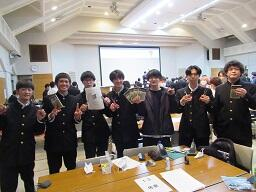
算額の世界
算額とは、江戸時代頃の和算の問題を記し奉納された額のことです。
普段は成田山霊光館に保管されていますが、現在は期間限定で成田山新勝寺の平和の大塔1階に展示されています。
算額には問題が昔の言葉で書いてあるため、解いていくにはまずは現代語訳しなければならず、歴史的背景も調べていく必要もあるので、様々な分野の知識が問われます。
今回参加したメンバーは総合的な探究の時間を利用して、算額についての研究を1年間行っていく予定です。
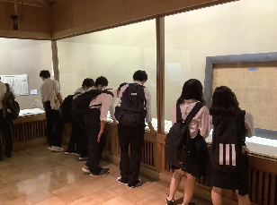 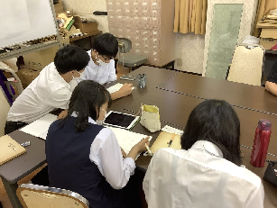
第９回科学の甲子園千葉県大会
SSH徹底探究基礎講座「千葉県の外来生物について考える」
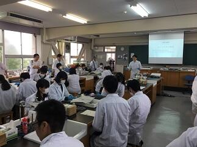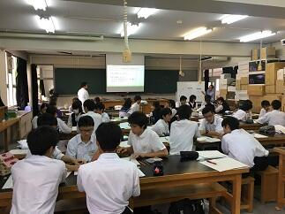
第９回千葉サイエンススクールフェスティバル
【午前の部】
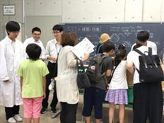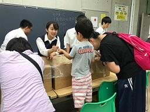
生物部（しじみ釣り） 電気部（エレクトラム）
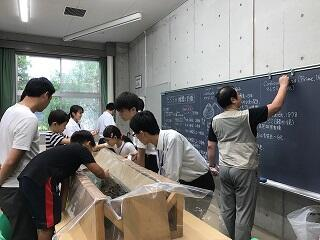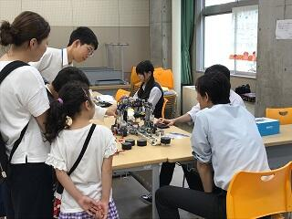
化学部（スライム作り） 自由研究の相談ブース
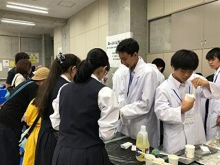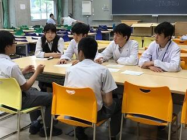
【午後の部】
サイエンスコミュニケーション（限られた材料を使ってどれだけ強度の高い橋を作れるかを競いました。
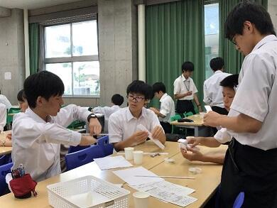
サイエンス・ダイアログを実施しました
最先端の研究内容を英語で話していただいたため、内容を理解するのに非常に苦労しましたが、研究への熱意に触れることができました。もっと英語を勉強して理解できるようになりたいと感じた人も多かったようです。
「サイエンス・ダイアログ」とは、（独）日本学術振興会（ＪＳＰＳ）のフェローシップ制度により、日本の大学・研究機関等に滞在している優秀な若手外国人研究者（JSPSフェロー）を、講師として高等学校等に派遣していただくもので、講師の方の研究や出身国に関する講義が英語で実施されます。研究内容や経歴について英語で聞くという経験を通じて、研究への関心や国際理解を深めることを目的として行われています。
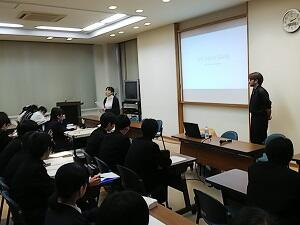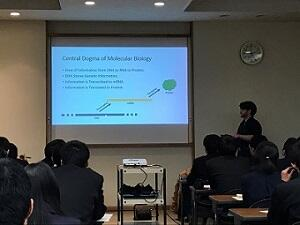
佐倉サイエンス
学校設定科目「佐倉サイエンス」は物理・化学・生物・地学・数学の基本的な実習を行う理数科１年生の科目です。（今回地学はお休み）
【化学】
【生物】
【物理】
【数学】
SSH海外研修事前指導 終了しました
海外研修でのポスター発表の練習に、千葉大学在籍の留学生や海外研修体験者をお招きし、プレゼン練習を年末から繰り返してきました。
１月１２日に行われた第４回をもって終了し、いよいよ本番を迎えるばかりとなりました。今までの成果を十分発揮してきて欲しいものです。
INTEL ISEF（国際科学技術フェア）に日本代表として参加しました
JSEC（日本科学技術チャレンジ）2016 でJFEスチール賞を受賞した理数科３年（学年は受賞時）上西里佳、田山智恵が、アメリカ合衆国ロサンゼルスで開かれた INTEL ISEF（国際科学技術フェア）2017にJSEC日本代表チームの一員として参加してきました。
とても厳しいブース設営チェックから審査日、一般公開日と目まぐるしくもとても充実した１週間を送ってきました。
受賞はなりませんでしたが、高校生世代の研究の世界基準、日本代表チームのチームワークの良さ、ウェルカムパーティで知り合った海外の生徒との交流、研究とOffのメリハリ（貸切Universal Studio）などを通して、沢山のことを学べたと思います。
写真説明
１→ 審査日の朝、日本代表チームで健闘を誓い合いました。
２→ 審査日では朝から夕方まで審査員とディスカッションしました。
３→ 一般公開日には、全員浴衣姿で発表し、海外の方々から撮影依頼がひっきりなしでした。
４→ 貸切Universal Studioでは、Finalistは深夜まで大はしゃぎしていました。
SSHシンガポール研修報告
１月１７日～２１日の日程で、２年理数科生徒３８名がSSHシンガポール研修へ参加してきました。１日目（１７日）は、９時に成田空港に集合し、結団式を行った後、保護者の方々や先生方に見送られながら日本を出発しました。約７時間４０分のフライトを経て、無事シンガポールに到着。翌日に備えて、夕食後は各自ホテルで体を休めました。
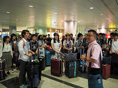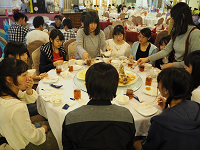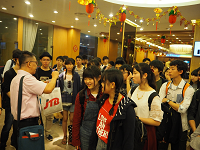
２日目（１８日）の午前は、SEA Aquariumにて、英語によるバックヤードツアーに参加してきました。開館前からのツアーだったため、静かな館内で生物の生態を詳しく知ることができました。また、餌やりの様子も見学でき、生徒も積極的に質問をしていました。午後は、Gardens by the BAYで少人数に分かれて、英語によるガイドツアーを行い、植物の生態や特徴等を学んできました。英語によるツアーが続いた１日でしたが、聞き取りやすく、内容を理解できた生徒も多かったようです。またこの日は研究発表に向けて、夕食後にプレゼンテーション練習を夜遅くまで行いました。
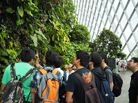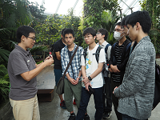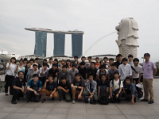
３日目（１９日）の午前は、JSTシンガポールを訪問し、佐藤所長によるシンガポールの科学技術戦術の講話をいただきました。さらに、シンガポール国立大学の松尾さんより、研究者生活とがん細胞に関する講話を聴きました。海外で働くこと、研究者として生活することを身近に感じ、講話後には活発な質疑応答となりました。昼食は、南洋工科大学の食堂を利用し、生徒はそれぞれ好きなものをカウンターで注文し、様々な国の料理を堪能していました。午後は、南洋工科大学にて、佐藤准教授より昆虫サイボーグに関する講話をしていただきました。時折笑いも起こるような終始和やかな雰囲気で、１時間があっという間に感じる魅力的な講話でした。その後、生徒による口頭・ポスター発表を行い、プレゼンテーションに関してアドバイスをいただきました。プレゼンテーションのレクチャーは全て英語で行いましたが、濃厚な指導をもらえたことで生徒は大変満足していました。
 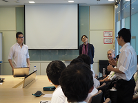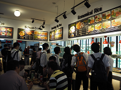
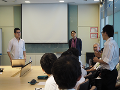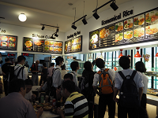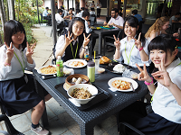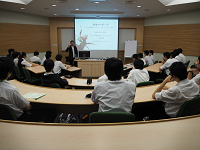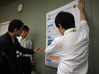
４日目（２０日）の午前は、班ごとに分かれて市内を自由に散策しました。午後は、この研修旅行のメインである南洋女子高等学校を訪問しました。今年度百周年を迎える南洋女子高校の校内を見学したり、互いに研究の口頭発表や、本校によるポスター発表も行いました。生徒は、緊張しながらも積極的に質問をしたり、自ら話しかけ交流する姿も見られました。夜は、ナイトサファリに参加し、トラムに乗車しながら夜に活動する動物の生態を観察しました。研究発表を終えた後だったため、生徒は大変リラックスした様子でした。その後、深夜２３時５５分発の飛行機に乗り、シンガポールを後にしました。
５日目（２１日）の７時３０分に無事日本に到着し、解散式の後、生徒は帰路につきました。誰一人体調を崩すことなく過ごすことができ、また研修後の生徒は大きく成長したように見れました。
高校生科学技術チャレンジでJFEスチール賞を受賞しました
本校理数科３年上西 里佳、田山 智絵の２名がJSEC2016において「アルミラクル ～天然染料を用いたアルマイトの着色～」でJFEスチール賞を授賞しました。その結果、来年５月に米国L.Aで行われる国際学生科学技術フェア ISEF2017に日本代表チームの一員として派遣されることになりました。
JSEC2016とは、高校生科学技術チャレンジのことで、朝日新聞・テレビ朝日主催の高校生及び高等専門生（３年生まで）を対象とした科学技術の自由研究コンテストです。日本全国から今年は約２５０強の応募があったようです。審査は専門家の審査委員による、２回の書類審査とそれを通過した３０作品によるプレゼンテーション審査で優秀な研究作品が選ばれます。上位入賞者の中から６グループが米国で開催される国際学生科学技術フェアIntel ISEF2017に派遣されます。
◎研究について
紙に色を着けるように、金属にも簡単に着色したいと考え、アルミニウムへの着色を試みました。一般的には合成着色料が使用されていますが、今回、天然染料（玉ねぎの皮の色素など）を用いた着色方法を確立させました。それは合成着色料には身体に悪影響を及ぼす恐れがある重金属が含まれているものが多いので、天然染料なら安全性が高く、身の回りの生活雑貨等に活かせると考えたためです。
結果的に、天然染料を用いたアルマイトの着色方法について、どんな色素がどのようにして着色出来ているのか等の結論を出せたことが研究の成果と言えます。 （生徒記）